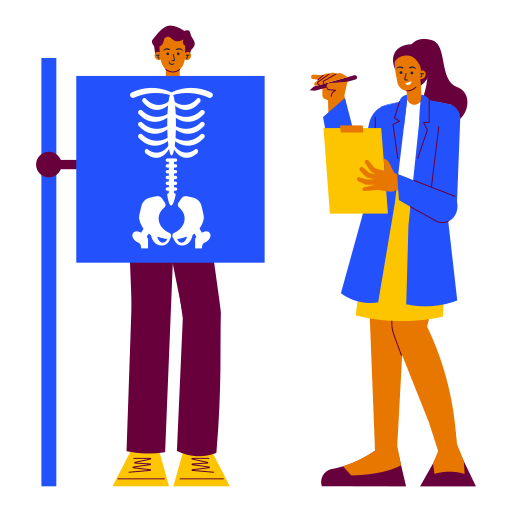

Realización de la actividad
Se realizará la simulación de la recogida de imagen de una radiografía de tórax por grupos, cada pareja hará de paciente/acompañante y técnicos. cada grupo tendrá una hoja con los pasos a seguir y describirán sus práctica clínica describiendo las incidencias encontradas por medio de la plataforma One Notes.
Para su evaluación deberán adjuntar una infografía con fotos del alumnado realizando la técnica y además un vídeo explicando las medidas de protección radiológica.
* Se adjunta lista de cotejo para el alumnado
* A continuación se adjunta la hoja descriptiva de la actividad.
Informe de la Práctica de Simulación en el alumnado de 1º de IPD:

Imagen de flaticon
Protección Radiológica en una Radiografía de tórax
Nombre del grupo: _____________________________
Fecha: _____________________________
Duración de la práctica: _____________________________
1. Objetivo de la actividad
Realizar una simulación de una exploración radiográfica de tórax, aplicando las medidas de protección radiológica, justificando la práctica, minimizando la exposición del paciente y del personal, y asegurando la seguridad durante la misma.
2. Justificación de la práctica
Se llevó a cabo esta exploración para obtener una imagen diagnóstica del tórax del paciente simulado, permitiendo identificar posibles patologías pulmonares. La práctica se realizó bajo el principio de justificación, asegurando que el beneficio diagnóstico superaba cualquier posible riesgo de exposición radiológica.
3. Preparación previa y planificación
Se verificó el estado del equipo radiológico, incluyendo la calibración y protección del equipo.
Se delimitó y colimó cuidadosamente el campo de radiación para restringirlo al área de interés.
Se seleccionaron los elementos de protección personal y protección estructural para el personal y el paciente.
Se explicó claramente al 'paciente' (simulado) el proceso y las recomendaciones de protección.
4. Procedimiento y medidas de protección
Posicionamiento: El paciente se colocó en posición erguida, con las manos en las caderas y respirando normalmente.
Protección del personal y el entorno:
Uso correcto de delantales plomados, collarines tiroideos y guantes.
Distancia segura: Se utilizó la distancia máxima posible entre la fuente y el técnico.
Colimación adecuada para reducir el área de exposición.
Ejecución: Se realizó la toma radiográfica ajustando la técnica para minimizar la dosis, utilizando tiempos cortos y protecciones adicionales cuando fue necesario.
Medición de la exposición: Se estimó la dosis en diferentes puntos, asegurando no superar los límites recomendados.
5. Resultados y estimaciones
La exposición en la posición del técnico fue baja, respetando las dosis límite.
Se utilizó un tiempo de exposición muy reducido, disminuyendo la dosis.
La radiografía se realizó con éxito, con imagen de calidad diagnóstica y sin incidentes.
6. Reflexión y conclusiones
La protección radiológica eficiente requiere una planificación previa y el uso adecuado de barreras y protección personal.
El cumplimiento de los principios de justificación, optimización y limitación de dosis garantiza la seguridad del paciente y del personal.
La actividad permitió comprender mejor la importancia de la protección en entornos clínicos y la aplicación práctica de las normativas.
Firma del miembro del grupo: __________________________